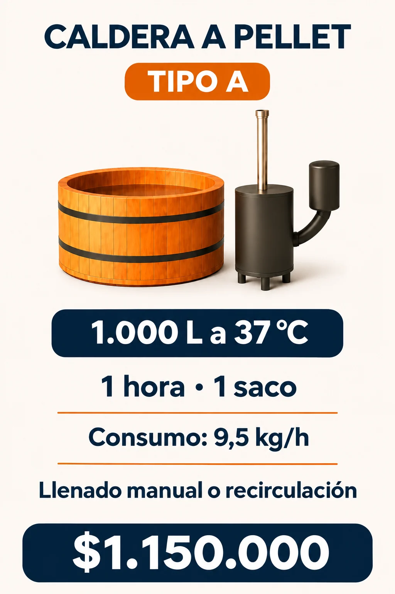
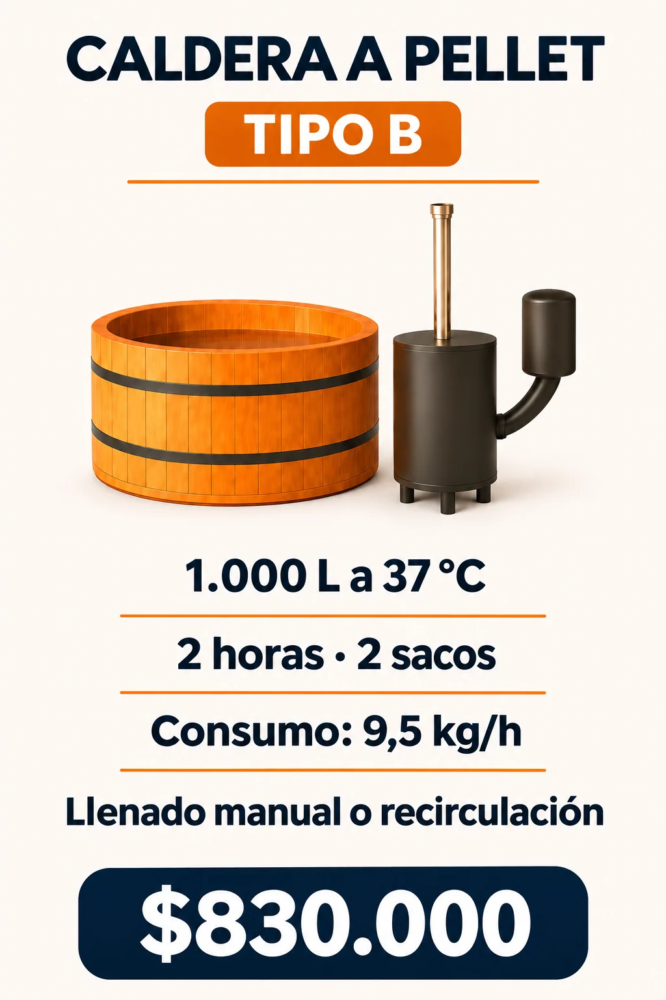
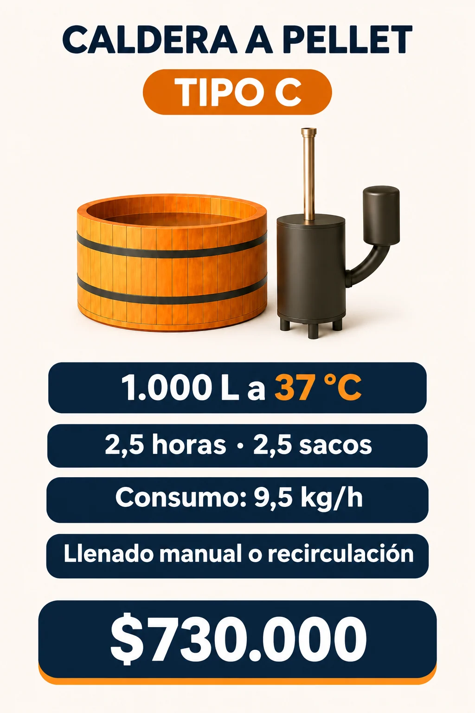
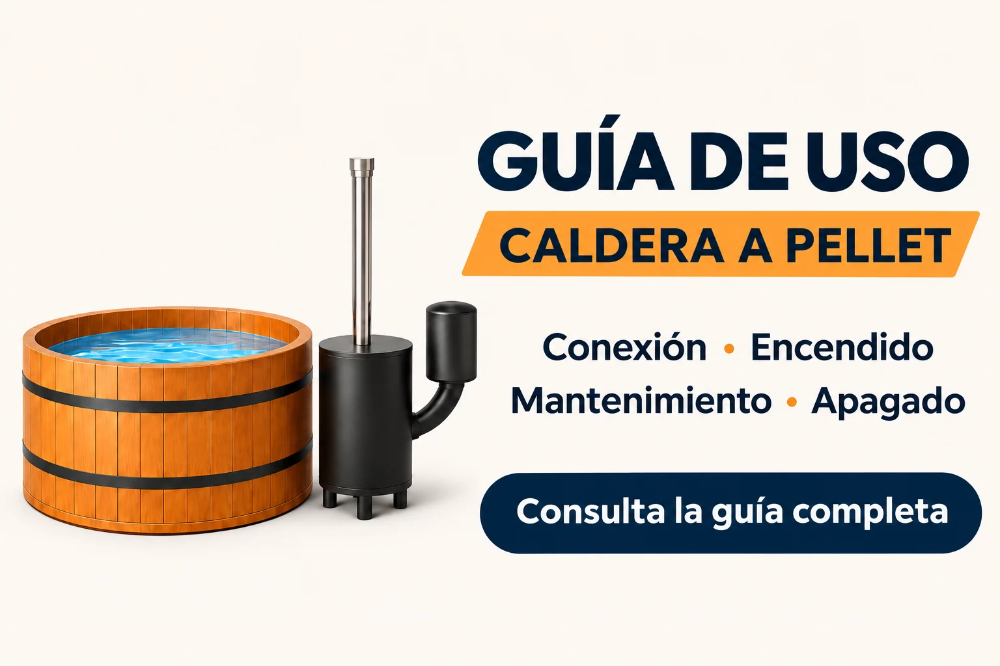

Calderas a pellet · RPV Construcciones
El calor de disfrutar tu espacio.
Soluciones de calefacción para tinajas y piscinas, pensadas para acompañar tus momentos al aire libre.
Soluciones de calefacción para tinajas y piscinas, pensadas para acompañar tus momentos al aire libre.
Tres alternativas para revisar según el tiempo de calentamiento y el presupuesto que buscas.



Valores y rendimiento según las fichas proporcionadas. Consulta vigencia, condiciones de operación y qué incluye cada modelo. Imágenes referenciales.

Consulta la guía completa de conexión, encendido, mantenimiento y apagado.
Abrir guía completa ↗
La caldera cuenta con una solicitud de patente presentada ante INAPI, el Instituto Nacional de Propiedad Industrial de Chile.
PDF generado a partir de la captura disponible.
Te ayudamos a conocer las opciones disponibles.
Hablar con RPV ↗